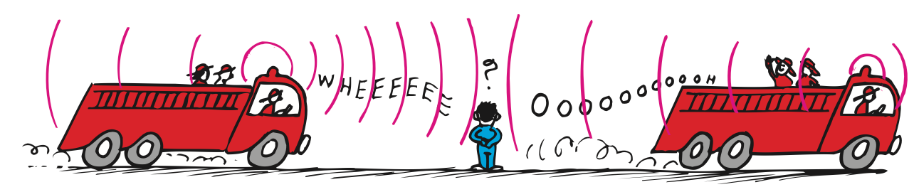

1. Define constructive interference using the idea of reinforcement.
2. Define destructive interference using the idea of opposing displacements.
3. What two wave processes are involved in forming a standing wave on a string fixed at an end?
4. In the Doppler effect, which quantity changes for the observer: observed frequency or the source’s actual cycle rate?
5. Give one example of wave interference that is not a sound example.
6. Use the Doppler image to compare wavefront spacing ahead of and behind the moving source. Infer how the observed frequencies compare.

7. At a point where two waves overlap, the displacements are −3 cm and −4 cm. Find the combined displacement and identify the kind of reinforcement.
8. At another point the displacements are +6 cm and −1 cm. Find the resultant and explain why the cancellation is only partial.
9. A standing wave has nodes 0.50 m apart. Explain what the repeated node spacing tells you about the stable spatial pattern, without introducing a new formula.
10. A siren passes a stationary listener. Describe how the observed pitch should change from approach to recession and link that change to wavefront arrival spacing.
11. A student draws two pulses overlapping destructively and then draws no pulses afterward. Identify the modeling error and describe the later state.
12. Compare a traveling wave with a standing wave by discussing net pattern travel, nodes, and the role of reflection/interference.
13. Which word describes the result when waves overlap?
14. Two equal opposite pulses overlapping completely have an instantaneous resultant of
15. Standing-wave nodes are created at locations of
16. Wavefronts spread farther apart behind a receding source. The observer behind measures
17. Two +3 cm displacements overlap. The instantaneous resultant is
18. Which situation can create a standing wave?
19. The Doppler effect changes the observer’s measured
20. Partial interference means overlapping waves